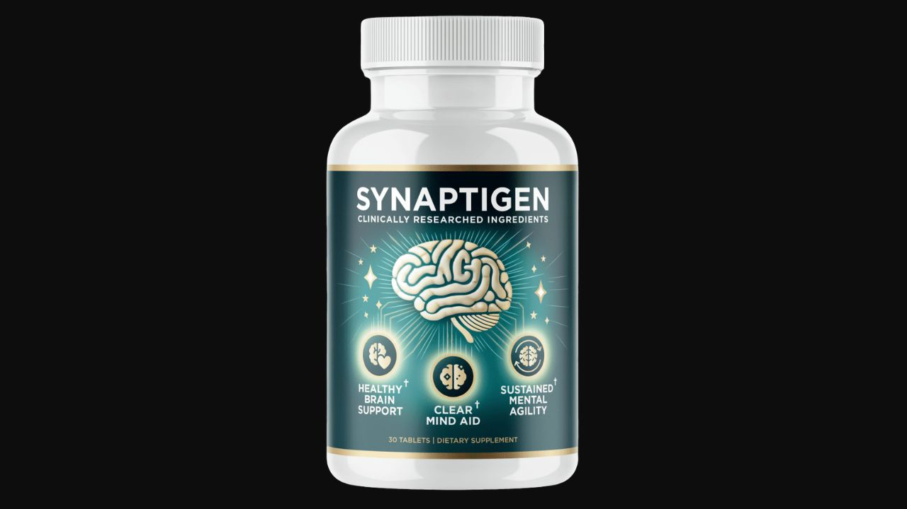

Health Reviews Labs investigated the mechanism behind Synaptigen's probiotic-based approach to cognitive clarity — and why targeting the gut-brain axis produces a fundamentally different result than stimulant or neurotransmitter-focused formulas.

Gut-Brain Axis Formula · Stimulant-Free · 180-Day Guarantee
→ Click Here for Official SiteSynaptigen is a stimulant-free cognitive supplement formulated around the gut-brain axis — the bidirectional communication network between the intestinal microbiome and the central nervous system. Rather than boosting neurotransmitter levels or increasing blood flow to the brain (the two most common nootropic approaches), Synaptigen targets the metabolic environment in which neurons are operating. The central premise: when the gut microbiome is dysbiotic, inflammatory signals and metabolic interference reach brain tissue through the blood-brain barrier, impairing synaptic communication. Improving gut microbial health creates downstream improvements in neural function.
The formula comes as a melt-in-mouth tablet — a delivery format that allows sublingual absorption of some compounds while maximizing time in the oral cavity before the remainder reaches the gut, where the probiotic strains do their primary work.
Most nootropics approach cognitive decline by adding more to a stressed system — more choline precursors, more blood flow, more neurotransmitter substrate. The gut-brain approach asks a different question: why is the neural environment impaired in the first place?
The gut microbiome produces short-chain fatty acids, neurotransmitter precursors, and inflammatory cytokines that all reach the brain through two pathways — the vagus nerve and systemic circulation through the blood-brain barrier. When gut bacteria are imbalanced toward dysbiosis, the signals reaching the brain shift toward inflammation and metabolic interference. Neurons accumulating the byproducts of this imbalance experience impaired synaptic efficiency — what users experience as brain fog, slow recall, and difficulty sustaining attention.
Synaptigen addresses this upstream rather than compensating downstream.
A gut-brain signaling probiotic strain with research on neuroinflammatory marker reduction. Produces short-chain fatty acids that reach the brain via systemic circulation, modulating the inflammatory environment in which neurons operate. Also researched for immune modulation relevant to reducing systemic inflammation that impairs neural function.
A patented strain from IFF with documented immune modulation activity — the same strain found in ProDentim for oral health. In the cognitive context, BL-04's immune-modulating properties reduce systemic inflammatory load reaching brain tissue, contributing to a cleaner metabolic environment for neural communication.
Provides anthocyanins — polyphenolic compounds with documented antioxidant activity specifically in brain tissue. Multiple studies show anthocyanin-rich berry extracts improve memory performance and processing speed in aging adults, with the mechanism involving reduction of oxidative stress in hippocampal neurons involved in memory consolidation.
Contributes rosmarinic acid — a phenolic compound with anti-inflammatory properties relevant to neuroinflammation. Also provides the sensory palatability that makes the melt-in-mouth format pleasant to use consistently, which matters for a formula requiring weeks of sustained use to show benefit.
A mineral compound that serves as both a nutrient and a functional component of the tablet matrix. Calcium supports neural transmission — it's an essential cofactor in the signaling cascades that regulate neurotransmitter release at synapses.
Synaptigen represents a genuinely different mechanistic approach to cognitive support — addressing the gut-brain metabolic environment rather than compensating downstream with neurotransmitter boosters or stimulants. The probiotic strains are clinically recognized, the delivery format is appropriate for both oral and gut delivery, and the 180-day guarantee — the longest in the supplement category — provides meaningful security for a formula that requires 6-8 weeks to show full benefit. For adults who have tried stimulant-based nootropics without lasting results, the gut-brain axis mechanism offers a substantively different pathway worth evaluating.
Probiotic strains are colonizing. No immediate cognitive effect — this is expected and correct. Do not stop if nothing happens in week one.
As bacterial populations establish and gut-brain signaling begins to shift, most users report lower afternoon mental fatigue and marginally improved word-finding and recall speed.
Full benefit as the gut microbiome composition has shifted and the downstream inflammatory reduction reaches brain tissue consistently. Ability to sustain attention on demanding tasks improves.
Confirm current pricing on the official site before purchase.
The longest guarantee in the cognitive supplement category — double the 90-day standard. Covers the full 6-8 week evaluation window with significant time to spare.
Gut-Brain Axis Formula · Stimulant-Free · Longest Guarantee in Category
→ Click Here for Official Site